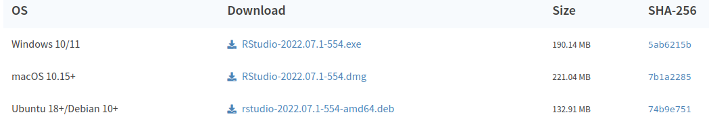

Installing R and RStudio
You will do all of your work in this class with the open source (and free!) R programming language. You will use RStudio as the main program to access R. Think of R as an engine and RStudio as a car dashboard—R handles all the calculations and the actual statistics, while RStudio provides a nice interface for running R code.
Install R
First you need to install the latest version of R itself (the engine), currently 4.4.1 (Race for Your Life).
- Go to the Comprehensive R Archive Network (CRAN) website: https://cran.r-project.org/
- Click on “Download R for
XXX”, whereXXXis either Mac or Windows:
If you use macOS, scroll down to the first .pkg file in the list of files and download it.

If you use Windows, click “base” (or click on the bolded “install R for the first time” link) and download it.

Double click on the downloaded file (check your
Downloadsfolder). Click yes through all the prompts to install like any other program.Install OS specific programs
- macOS only: download and install XQuartz.
- Windows only: download and install Rtools
Install RStudio
Next, you need to install RStudio, the nicer graphical user interface (GUI) for R (the dashboard). Once R and RStudio are both installed, you can ignore R and only use RStudio. RStudio will use R automatically and you won’t ever have to interact with it directly.
- Go to the free download location on RStudio’s website: https://www.rstudio.com/products/rstudio/download/#download
- The website should automatically detect your operating system (Linux, macOS or Windows) and show a big download button for it:

If not, scroll down a little to the large table and choose the version of RStudio that matches your operating system.

- Double click on the downloaded file (again, check your
Downloadsfolder). Click yes through all the prompts to install like any other program.
Double click on RStudio to run it (check your applications folder or start menu).
Install tidyverse
R packages are easy to install with RStudio. Select the packages panel, click on “Install,” type the name of the package you want to install, and press enter.

For example, go to the packages panel in RStudio, click on “Install,” type “tidyverse”, and press enter. You’ll see a bunch of output in the RStudio console as all the tidyverse packages are installed.

Notice also that RStudio will generate a line of code for you and run it: install.packages("tidyverse"). You can also just paste and run this instead of using the packages panel.
To install all R packages used throughout the course, use the commands
Code
libs <- c("afex", "car", "dplyr", "emmeans", "effectsize",
"ggplot2", "lme4", "lmerTest", "mediation", "nlme",
"patchwork", "pwr", "remotes", "tidyr", "WebPower")
for(lib in libs){
if(!lib %in% installed.packages()[,"Package"]){
install.packages(lib)
}
}
# Load package containing databases
remotes::install_github("lbelzile/hecedsm")Install tinytex
When you knit to PDF, R uses a special scientific typesetting program named LaTeX, which is complicated and a large download. To make life easier, there’s an R package named tinytex that installs a minimal LaTeX program and that automatically deals with differences between macOS and Windows.
To install tinytex:
- Use the Packages in panel in RStudio to install tinytex like you did above with tidyverse. Alternatively, run
install.packages("tinytex")in the console. - Run
tinytex::install_tinytex()in the console. - Wait for a bit while R downloads and installs everything you need.
- You should now be able to knit to PDF.
Learning R
Searching for help with R on Google can sometimes be tricky because the program name is a single letter. Google is generally smart enough to figure out what you mean when you search for “r scatterplot”, but if it does struggle, try searching for “rstats” instead (e.g., “rstats scatterplot”).
Check out StackOverflow (a Q&A site with hundreds of thousands of answers to all sorts of programming questions) and RStudio Community (a forum specifically designed for people using RStudio and the tidyverse).